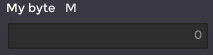
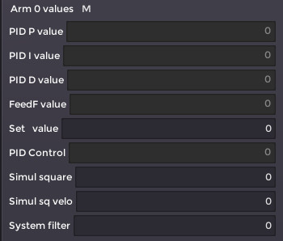
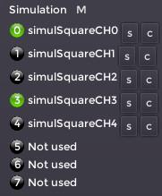

The User Configuration File (UCF)
UCF is in fact a Lua file. It is for sure not necessary to know the Lua language to create or manipulate the file, but respecting the Lua syntax is mandatory. Also, it is a good idea to have an editor with Lua syntax coloration, it helps to see any mistake, especially a missing bracket.
There are three main objects in the file:
1) The Default object:
cfg:Default({
--parameters
})
This object appears only once at the beginning of the file. Inside are the parameters for the communication and the gui layouting.
2) The Variable object:
cfg:Variable({
--parameters
})
This object is used for representing one variable -or several variables in an array- that is reported by the target. The file can have many objects of this kind.
3) The Solid object:
cfg:Solid({
--parameters
})
This object is used for representing a 3D shape in the 3D view. The file can have many objects of this kind.
Syntax
Each of the three objects has this special syntax:
cfg:XXX({
--parameters
})
Don't worry about this, that means only that Lua calls the embedded function XXX with parameters given between { } (a table in Lua).
All the parameters follow the simple syntax:
Key = Value, (may have spaces around the =)
(notice the comma at the end of the line, this one is optional if the parameter is the last one)
Depending of the Key, the Value can be a string, a boolean (true or false), a Lua function (see further), a Lua table (again something surrounded by { }) or a simple numerical value.
The file can have comments, all characters following -- are ignored.
The Default object
This object is described here after with all its possible Keys, explanations are inside:
cfg:Default({
----------------------
-- Mandatory fields --
----------------------
Baudrate = 460800, -- Must match the baudrate used by the target
-- Commands from monitor to target;
SetValue = '#', -- Don't modify this
ReportValueOn = '?', -- Don't modify this
ReportValueOff = '!', -- Don't modify this
-- Messages from target to monitor
IReportValue = ':', -- Don't modify this
IReportTextConsole = '>', -- Don't modify this
--Every sampleTimeHW a variable is sent
SampleTimeHW= 0.001, -- Must match the one of the target for correct
-- timing display
--- GUI LAYOUTING
-- This Key is responsible for the variables displaying. The
-- variables are referenced by their indexes (integer value). A tab
-- (example Tab0) has a name and may contains several columns.
-- The columns are all in the Columns Key.
GroupTabs= { -- There are two groups of tabs
{-- group0
NoExpandX=true, -- Means strech horizontally the group to
-- its elements, optional, default=false
Tabs = { -- There are two tabs in the group
{ -- Tab0
TabName="Example 0",
Columns= { -- There are two columns in the tab
{ 0, 9, }, -- This column has two rows
{ 10, }, -- This column has one row
}
},
{ -- Tab1
TabName="Example 1",
Columns= {
{ 20, 29, },
{ 30, },
}
},
},
{-- group1
--NoExpandX=true,
Tabs = { -- There is one tab in the group
{ -- Tab0
TabName="Example 2",
Columns= { -- There is one column in the tab
{ 100 },
}
},
}
},
----------------------
-- Optional fields --
----------------------
-- Indianess of the target, usually little
-- Other value: 'big'
Endian = 'little', -- default = 'little'
-- If 3D view requested, set this to true
Vue3D = true, -- default = false
-- If plot view requested, set to true
Plot = true, -- default = false
})
The Variable object
At first, an example with the mandatory fields is presented here after:
---------------
cfg:Variable({
Name="My byte", -- Name that appears in front of the variable
Type="B", -- Variable type, here a byte
Index=0, -- Variable index in the target structure variables
-- Use also this index in the GroupTabs LAYOUT
-- for displaying
})
On the GUI, it's rendered like this:

The variable type can be one of the following (excerpt of monitoring.h):
typedef enum {
eComDataType_Float = 'f', // 8 chars
eComDataType_U32 = 'W', // 8 chars
eComDataType_I32 = 'w', // 8 chars
eComDataType_U16 = 'I', // 4 chars
eComDataType_I16 = 'i', // 4 chars
eComDataType_U8 = 'B', // 2 chars
eComDataType_I8 = 'b', // 2 chars
} eDataType_t;
With a special Key in the object, one can embed 8 bool type in the byte type.
Another case with all the Key recognized:
---------------
cfg:Variable({
Name="My unsigned 16",
Type="I",
Index=0,
--- Optional Keys
-- The variable belong to the parameter group "Base parameters"
Parameter="Base parameters", -- if Parameter Key ommited, variable
-- has no parameter group
--
HideData=false, -- if set to true, the variable isn't displayed,
-- this is mainly used with the "Button" WidgetType
-- (default = false)
Scroll=false, -- used mainly if the variable is an array, put a
-- vertical scrolbar on the widget (default=false)
WidgetType="SliderH", -- can be "Normal" (default), "SliderH",
-- "SliderV" and "Button"
SliderMin = 0, -- mandatory only if WidgetType="SliderH" or
-- "SliderV": Minimum value of the slider
SliderMax = 1000, -- mandatory only if WidgetType="SliderH" or
-- "SliderV": Maximum value of the slider
Data = { -- we will see this Key after
-- parameters
},
})
The Data Key permits on a one hand to adjust the value parameter and on the other hand to define an array of values:
---------------
cfg:Variable({
Name="My float",
Type="f",
Index=0,
--- Optional Keys
Data = {
{ -- all is optional
BoolsOnU8=false,-- use only with "B" type (default=false)
Value= 0.0, -- a default value, if Key ommited Value = 0
CanEdit=true, -- permit to the user to edit the value and
-- send it to the target when he press enter
-- (default=false)
CanPlot=true, -- when true, add this variable to the plot list
-- of the plotter
Precision=5, -- for "f" type variable, the number of decimal
-- digits to display (default = 3)
SingleText = "",-- in case of array of values, the text to
-- display in front of each variable
-- (default = "")
},
},
})
Then for example if one wants to report a float variable with editing and plotting capability and with a display precision of 1, the Variable object is like this:
---------------
cfg:Variable({
Name="My float",
Type="f",
Index=10,
--- Optional Keys
Data = {
{ CanEdit=true, CanPlot=true, Precision=1 }, -- Data0, index 10
},
})
It is possible to display several consecutive indexes in an array:
---------------
cfg:Variable({
Name="Arm 0 values",
Type="f",
Index=20, -- In a array, this index is the base index
Data= {
{ SingleText = "PID P value" }, -- Data0, index 20
{ SingleText = "PID I value" }, -- Data1, index 21
{ SingleText = "PID D value" },
{ SingleText = "FeedF value" },
{ SingleText = "Set value", CanEdit=true },
{ SingleText = "PID Control" },
{ SingleText = "Simul square", CanEdit=true },
{ SingleText = "Simul sq velo", CanEdit=true },
{ SingleText = "System filter", CanEdit=true }, -- Data8, index 28
}
})
On the GUI, it's rendered like this:

It's possible to display/edit bool values, for this the type must be "B" and the Key BoolsOnU8 must be set to true:
---------------
cfg:Variable({
Name="Simulation",
Type="B",
Index=115,
Data= {
{ -- Data0
BoolsOnU8=true, -- when set, tell to display the byte
-- as 8 booleans (default=false)
--- Optional Key
BitsTexts = {
"simulSquareCH0", "simulSquareCH1",
"simulSquareCH2", "simulSquareCH3",
"simulSquareCH4", "Not used",
"Not used", "Not used"
},
--- Optional Key
CanBitsEdits = {
true,true,true,true,
true,false,false,false
},
}
}
})
On the GUI, it's rendered like this, notice the smalls buttons s (set) and c (clear) to set/clear the bit.

The Solid object
The example below shows a Solid object, it is used to render any 3D shape in the 3D view
The simplest Solid definition:
---------------
cfg:Solid({
-- Mandatory fields
Parent="Root", -- see after
Name="Sol", -- The name of the Solid
Body="Cube", -- Shape rendered, can be "Cube", "Sphere"
-- and "Cylinder"
A solid definition with all the Key accepted:
---------------
cfg:Solid({
-- Mandatory fields
Parent="Root", -- The string value "Root" is reserved to the system
-- It tells that this Solid is connected to the 3D
-- scene origin.
Name="Sol", -- The name of the Solid
Body="Cube", -- Shape rendered, can be "Cube", "Sphere"
-- and "Cylinder"
-- Optional fields
StartPosition={ 0, 0.5, -0.2 }, -- Offset position in the scene {x,y,z}
-- default: {0,0,0}
StartRotation={ 0, 90, 0 }, -- Offset rotation in the scene {x,y,z}
-- default: {0,0,0}
CubeSize = { 5, 0.1, 10 }, -- Cube dimension if Body="Cube"
-- default: {1,1,1}
CylinderTopRadius= 1, -- Cylinder dimension if Body="Cylinder"
-- default: {1,1,1}
CylinderBottomRadius= 1, -- Cylinder dimension if Body="Cylinder"
-- default: {1,1,1}
CylinderHeight= 1, -- Cylinder dimension if Body="Cylinder"
-- default: {1,1,1}
SphereRadius= 1, -- Sphere dimension if Body="Sphere"
-- default: {1,1,1}
SphereHeight= 1, -- Sphere dimension if Body="Sphere"
-- default: {1,1,1}
MoveRotationSmooth=true, -- Enable smooth rotation, default=false
MovePositionSmooth=true, -- Enable smooth translation, default=false
Color={ 0.4, 0.3, 0.2 }, -- Color of the shape {red, green, blue}
-- values are from 0.0 to 1.0
-- default = {1,1,1}
Formula = -- If omitted, no Formula, if present must respect
-- this syntax. self is an object given by the system
-- for the user to manipulate variables
function(self)
--
end, -- don't forget the comma if there is another key after Formula
})
A solid definition with a Formula key:
cfg:Solid({
-- Mandatory fields
Parent="Sol", -- Notice that this solid is referenced to "Sol" Solid
-- defined before. Then its position and rotation is
-- referenced to the "Sol" origin
Name="Bras0",
Body="Cube",
-- Optional fields
StartPosition={ 0, 0.5, -0.2 },
StartRotation={ 0, 45, 0 },
Color={ 0.4, 0.3, 0.3 },
MoveRotationSmooth=true,
Formula =
function(self)
self.R.y = 90 - self:GetVariable(9)
-- Here the Solid rotation around the y axis is related
-- with the variable value of index 9
end,
})
Objects availables for the key Formula
System variables
P: current positions of the solid, accessed with self.P.x, self.P.y and self.P.z
R: current rotations of the solid, accessed with self.R.x, self.R.y and self.R.z
System functions
GetVariable(index): access the variable value of index index
GetVariable(index, bitindex): access the variable value of index index and return the nth bitindex bit value as a number (0 or 1)
Lua functions
All Lua functions are available